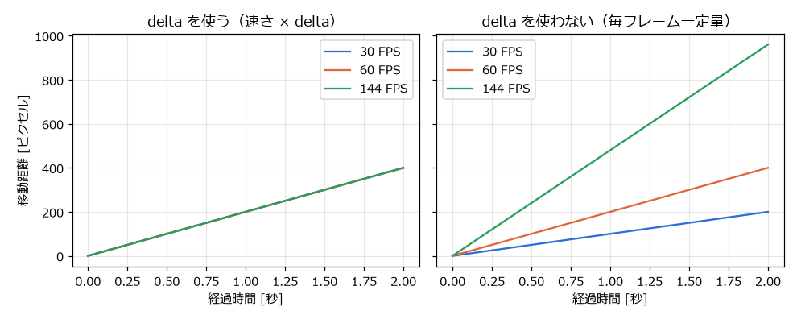
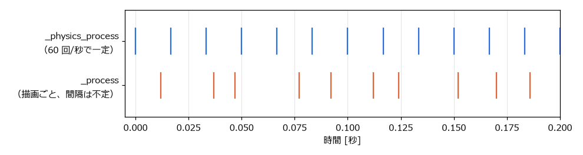

第 8 章 ゲームループと時間
ゲームのプログラムは、一般的な業務アプリケーションとは動き方が大きく異なる。本章では、ゲームの心臓部であるゲームループと、時間の扱い方を説明する。サンプルは chapter08 フォルダーにある。
ゲームループ
業務アプリケーションや Web サーバーは、ユーザーの操作やリクエストが来るまで待ち、来たら処理をする（イベント駆動）。何も起きなければ、プログラムは何もしない。
一方、ゲームは、プレイヤーが何も操作しなくても、敵が動き、時間が進み、画面が更新され続ける。そのため、ゲームのプログラムは次の処理を高速に繰り返している。この繰り返しをゲームループ（game loop）と呼ぶ。
図 11 ゲームループの基本形
この 1 回分の繰り返しをフレーム（frame）と呼び、1 秒間に何フレーム処理したかをフレームレート（FPS、frames per second）と呼ぶ。一般的なゲームは 60 FPS 前後で動く。つまり、1 フレームの処理を約 16.7 ミリ秒以内に終える必要がある。
Godot を使う場合、ゲームループそのものはエンジンが実行する。開発者は、ループの中で呼ばれる関数（_process() や _physics_process()）に、1 フレーム分の処理を書く。
_process() と delta
_process(delta) は、毎フレーム、画面を描画する前に呼ばれる。引数 delta は、前のフレームから経過した時間（秒）である。60 FPS で動いていれば約 0.0167 になる。
フレームレートは一定ではない。PC の性能、画面のリフレッシュレート（60 Hz、144 Hz など）、その時点の処理の重さによって変わる。そのため、物体を動かすときは「1 フレームあたりの移動量」ではなく「1 秒あたりの移動量（速さ）」を決め、それに delta を掛ける。
1const SPEED: float = 200.0 # 1 秒あたり 200 ピクセル
2
3
4func _process(delta: float) -> void:
5 position.x += SPEED * delta # 正しい：フレームレートによらず 1 秒で 200 ピクセル進む
6 # position.x += 3.0 # 誤り：フレームレートが高いほど速く進む
次の図は、30 FPS、60 FPS、144 FPS の環境で 2 秒間動かしたときの移動距離を比べたものである。delta を使うと、どの環境でも同じ距離だけ進む。使わない場合は、フレームレートに比例して移動距離が変わってしまう。


図 12 delta を使う場合と使わない場合の移動距離
サンプルの delta_demo.tscn は、この違いを実際に確かめるものである。上下キーで最大フレームレートを 30、60、144 FPS に切り替えると、delta を使わない赤い四角形だけ速さが変わる。
1extends Node2D
2## delta を使う移動と使わない移動の違いを確かめるサンプル。
3## 上下キーで最大フレームレートを切り替えると、delta を使わない四角形だけ速さが変わる。
4
5const SPEED: float = 200.0 # 1 秒あたりの移動量 [ピクセル]
6const FPS_CHOICES: Array[int] = [30, 60, 144]
7
8var _fps_index: int = 1
9var _x_with_delta: float = 0.0
10var _x_without_delta: float = 0.0
11var _tick_count: int = 0
12
13@onready var _info: Label = $Info
14
15
16func _ready() -> void:
17 Engine.max_fps = FPS_CHOICES[_fps_index]
18 # Timer ノードの timeout シグナルで、一定間隔の処理を行う。
19 $TickTimer.timeout.connect(_on_tick_timer_timeout)
20
21
22func _process(delta: float) -> void:
23 # 正しい書き方：速さ × 経過時間。フレームレートが変わっても 1 秒で 200 ピクセル進む。
24 _x_with_delta = wrapf(_x_with_delta + SPEED * delta, 0.0, 1000.0)
25 # 誤った書き方：1 フレームごとに一定量進む。フレームレートが高いほど速くなる。
26 _x_without_delta = wrapf(_x_without_delta + SPEED / 60.0, 0.0, 1000.0)
27 var info_format := "最大 FPS: %d（上下キーで変更） 実測 FPS: %d タイマーの発火回数: %d"
28 _info.text = info_format % [Engine.max_fps, Engine.get_frames_per_second(), _tick_count]
29 # _draw() を呼び直して、四角形を新しい位置に描き直す。
30 queue_redraw()
31
32
33func _unhandled_input(event: InputEvent) -> void:
34 if event.is_action_pressed("move_up"):
35 _fps_index = mini(_fps_index + 1, FPS_CHOICES.size() - 1)
36 elif event.is_action_pressed("move_down"):
37 _fps_index = maxi(_fps_index - 1, 0)
38 else:
39 return
40 Engine.max_fps = FPS_CHOICES[_fps_index]
41
42
43func _exit_tree() -> void:
44 # 他のサンプルに影響しないよう、制限を解除する（0 は無制限）。
45 Engine.max_fps = 0
46
47
48func _draw() -> void:
49 var font := ThemeDB.fallback_font
50 draw_string(font, Vector2(50, 140), "delta を使う")
51 draw_rect(Rect2(50.0 + _x_with_delta, 150.0, 40.0, 40.0), Color.SKY_BLUE)
52 draw_string(font, Vector2(50, 290), "delta を使わない")
53 draw_rect(Rect2(50.0 + _x_without_delta, 300.0, 40.0, 40.0), Color.SALMON)
54
55
56func _on_tick_timer_timeout() -> void:
57 _tick_count += 1
Engine.max_fps は、フレームレートの上限を設定するプロパティである。0 は上限なしを表す。_draw() は Node2D などで図形を描画する関数で、queue_redraw() を呼ぶと次のフレームで呼び直される。
_physics_process()
_physics_process(delta) は、物理演算の更新のたびに呼ばれる。描画のフレームとは独立して、一定の間隔で呼ばれるのが特徴である。間隔はプロジェクト設定の「物理」→「一般」にある「1 秒あたりの物理ティック数」（physics/common/physics_ticks_per_second）で決まり、既定値は 60 である。そのため delta は常に約 0.0167 になる。


図 13 _physics_process() と _process() が呼ばれるタイミングの例
描画が遅れて前回から 2 回分以上の時間が経った場合、Godot は次の描画の前に _physics_process() を複数回呼んで遅れを取り戻す。第 6 章 GDScript の基礎 の lifecycle.tscn の出力で、_physics_process が続けて表示されていたのはこのためである。逆に描画が速い場合は、_physics_process() が呼ばれないフレームもある。
2 つの関数は、次のように使い分ける。
関数 |
向いている処理 |
|---|---|
|
物理演算に関わる処理。 |
|
それ以外の処理。物理演算を使わない移動、アニメーション、UI の更新、カメラの追従など。描画のたびに呼ばれるので、動きがなめらかになる。 |
一定の間隔で更新する方法を固定タイムステップと呼ぶ。物理演算の結果は時間の刻み幅によって変わるため、刻み幅を一定にしておかないと、同じ操作をしてもフレームレートによってジャンプの高さが変わる、といった問題が起きる。
垂直同期と最大 FPS
Godot は既定で垂直同期（V-Sync）が有効になっている。垂直同期は、画面のリフレッシュに合わせて描画する仕組みで、画面のちらつき（ティアリング）を防ぐ。垂直同期が有効な場合、フレームレートはモニターのリフレッシュレート（60 Hz のモニターなら 60 FPS）を上限とする。
垂直同期の設定は、プロジェクト設定の「表示」→「ウィンドウ」にある「垂直同期」→「垂直同期モード」（display/window/vsync/vsync_mode）で変更できる。フレームレートの上限は「アプリ」→「実行」の「最大FPS」（application/run/max_fps）で設定する。どちらの設定でも、delta を正しく使っていれば、ゲームの速さは変わらない。
時間を扱うノードと関数
一定時間ごとの処理や、一定時間後の処理には、次の方法がある。
方法 |
用途 |
|---|---|
|
一定時間ごとに |
|
1 回だけ使うタイマーを作る。 |
|
|
|
ゲームの起動からの経過時間をミリ秒で返す。処理時間の計測などに使う。 |
delta_demo.tscn の TickTimer は、「待機時間」を 0.5 秒、「自動スタート」をオンにした Timer ノードである。0.5 秒ごとに timeout シグナルを発行し、_on_tick_timer_timeout() で回数を数えている。
一時停止
get_tree().paused = true とすると、ゲームが一時停止する。一時停止中は、ほとんどのノードの _process()、_physics_process()、入力の処理が止まり、物理演算やタイマーも止まる。
一時停止中も動かしたいノード（ポーズメニューなど）は、インスペクターの「プロセス」→「モード」（process_mode）で動作を設定する。
モード |
動作 |
|---|---|
Inherit（継承） |
親ノードと同じ。既定値。ルートノードでは Pausable と同じになる。 |
Pausable |
一時停止中は止まる。 |
When Paused |
一時停止中だけ動く。 |
Always |
一時停止中も常に動く。 |
Disabled（無効） |
常に止まっている。 |
既定値は「継承」なので、親ノードの設定を変えると、その子ノードもまとめて同じ動作になる。第 17 章 チュートリアル：岩よけゲームを作る のチュートリアルでは、スコアなどを表示する HUD を Always にして、一時停止の切り替えを受け付けている。